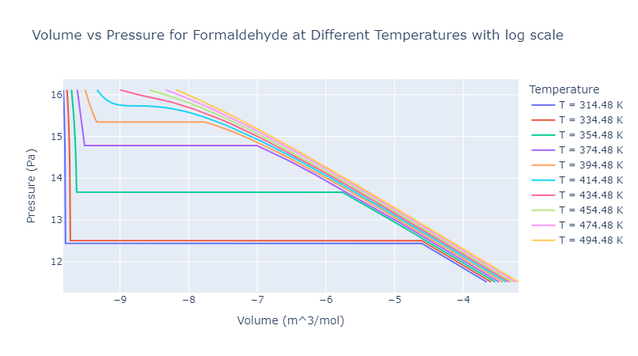
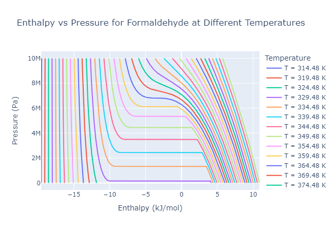
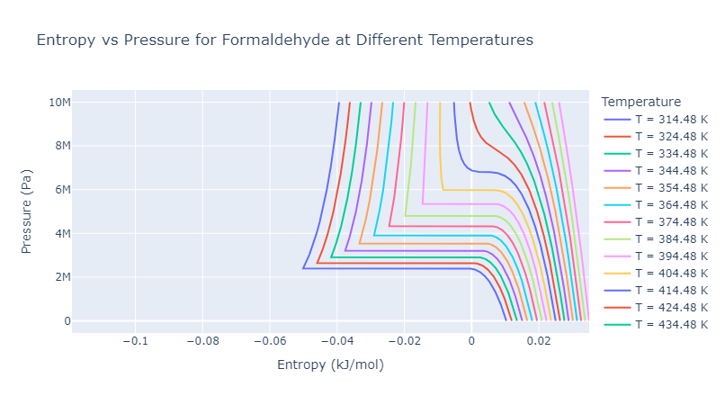
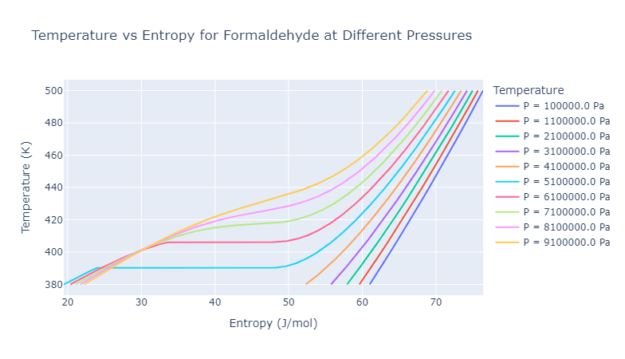

Generate a comprehensive set of thermodynamic property charts for a chosen single-component material, using accessible data for ideal gas specific heat and a suitable volumetric equation of state (EoS). The following key thermodynamic properties should be analyzed and visualized:
Select a material with:
Develop a Python script to calculate thermodynamic properties:
Plot each property using Python's Plotly or a similar library. Suggested visualizations:
Compare the calculated outputs with experimental data when available to ensure model accuracy.
Formaldehyde was selected for this analysis due to its significant industrial and medical applications. Formaldehyde and its derivatives play a crucial role in the upstream supply chain, aiding in the production of compounds essential for life-saving medical devices, such as:
In addition to its use in manufacturing medical devices, formaldehyde is well known as a preservative in medical laboratories and is commonly used as a sterilizing agent. Key applications in the pharmaceutical and medical industries include:
Anti-infective drugs: Formaldehyde serves as an active ingredient, promoting maximum absorption in gel capsules.
Vaccine Production: Formaldehyde is used to inactivate viruses and detoxify bacterial toxins in vaccines, including those for:
Medical Research: Formaldehyde is widely used in pharmaceutical research, especially in the fields of proteomics and genomics.
The thermodynamic properties data for formaldehyde used in this analysis is derived from the following source:
Koo, Raymond H. (1961). Thermodynamic Properties of Formaldehyde. Master's Thesis, Newark College of Engineering, New Jersey Institute of Technology. Available at: Digital Commons @ NJIT
This source provides essential information on formaldehyde's thermodynamic properties, including specific heats, enthalpy, entropy, and equations of state, which are foundational for generating accurate property charts.
C_p ConstantsThe following constants are used to calculate the specific heat capacity at constant pressure C_p for formaldehyde:
The ( C_p ) value for formaldehyde can be expressed as a temperature-dependent equation:
$$ C_p(T) = a_1 + b_1 \cdot T + c_1 \cdot T^2 $$
where:
This equation provides the temperature-dependent ( C_p ) values, which are essential for calculating enthalpy and entropy changes across different thermodynamic states.
The Peng-Robinson equation of state is used to model the thermodynamic behavior of formaldehyde. The parameters for the equation are calculated as follows:
a: Attraction parameter
$$ a = 0.45724 \times \frac{R^2 \times Tc^2}{Pc} $$
Resulting units: Pa·m⁶ / mol²
b: Repulsion parameter
$$ b = 0.07780 \times \frac{R \times Tc}{Pc} $$
Resulting units: m³ / mol
These parameters are essential for calculating properties such as pressure and volume under various temperature conditions, providing a more accurate model for real gas behavior.
To calculate the Peng-Robinson equation of state with temperature dependence, the following parameters and equations are used:
$$ k = 0.37464 + 1.54226 \cdot \omega - 0.26992 \cdot \omega^2 $$
$$ \alpha = \left( 1 + k \cdot \left( 1 - \sqrt{\frac{T}{T_c}} \right) \right)^2 $$
$$ P = \frac{R \cdot T}{V_m - b} - \frac{a \cdot \alpha}{V_m^2 + 2 \cdot b \cdot V_m - b^2} $$
where:
%pip install numpynp.sqrt(), np.log(), and np.real() are used to perform essential mathematical operations required in the Peng-Robinson equation of state, optimization, and the calculation of compressibility factors and enthalpy.%pip install scipyscipy.optimize.minimize_scalar function is used to perform optimization tasks on the volume (Vm) in the Peng-Robinson equation to find the minimum and maximum pressures for a given temperature. This is essential for calculating the pressure and volume relationship and determining the saturation pressure at different temperatures.%pip install plotlyH) vs pressure (P) curves at different temperatures. The go.Figure() and go.Scatter() functions help in creating interactive line plots, making it easier to analyze and visualize the relationships between the properties of formaldehyde (e.g., pressure, volume, and enthalpy) at different temperatures.This part documents two Python functions used to solve a cubic equation and calculate thermodynamic properties of a gas. These properties include the compressibility factors (Z1) and (Z3) and the molar volumes (V1) and (V3) at a specified temperature (T) and pressure (P).
solve_cubic(A, B)The cubic equation for the compressibility factor ( Z ) is given by:
$$ Z^3 - (1 - B)Z^2 + \left(A - 3B^2 - 2B\right)Z - (AB - B^2 - B^3) = 0 $$
This equation is solved to find the possible values of ( Z ), which correspond to different phases or states (e.g., gas and liquid phases) of a substance under specified temperature and pressure conditions. This function formulates and solves a cubic equation based on inputs (A) and (B), returning only the real roots.
we obtain multiple roots, which represent possible values of ( Z ) under the given conditions.
This behavior is particularly relevant near the critical point and in phase transition regions, where both liquid and vapor phases coexist at equilibrium, giving rise to a two-phase system. The compressibility factors associated with ( Z_1 ) and ( Z_3 ) help predict the behavior of each phase under given conditions.
The parameters ( A ) and ( B ) are calculated using the following equations, based on temperature ( T ), pressure ( P ), and critical properties of the substance (critical temperature ( T_c ) and critical pressure ( P_c )).
The parameter ( A ) represents the attractive forces between molecules and is given by:
$$ A = \frac{0.45724 \cdot R^2 \cdot T_c^2}{P_c} \cdot \left(1 + \kappa \cdot \left(1 - \sqrt{\frac{T}{T_c}}\right)\right)^2 \cdot \frac{P}{(R \cdot T)^2} $$
where:
$$ \kappa = 0.37464 + 1.54226 \cdot \omega - 0.26992 \cdot \omega^2 $$
The parameter ( B ) represents the volume excluded by molecules due to their finite size and is calculated as:
$$ B = \frac{0.07780 \cdot R \cdot T_c}{P_c} \cdot \frac{P}{R \cdot T} $$
These parameters are used in the cubic equation to solve for the compressibility factor ( Z ) and analyze phase behavior.
# Calculate Z values
def solve_cubic(A, B):
coeffs = [1, -(1 - B), A - 3 * B**2 - 2 * B, -(A * B - B**2 - B**3)]
roots = np.roots(coeffs)
return np.real(roots[np.isreal(roots)]) # Only real roots
# Calculate properties
def calculate_properties(T, P):
A = calc_a(T) * P / (R * T)**2
B = calc_b() * P / (R * T)
Z_values = solve_cubic(A, B)
Z1, Z3 = np.min(Z_values), np.max(Z_values)
V1 = Z1 * R * T / P # m^3/mol
V3 = Z3 * R * T / P # m^3/mol
return Z1, Z3, V1, V3
compute_integral Function# Integrate using compute_integral
def compute_integral(P, R, T, a, b, P_min, k=0.001):
Z1, Z3, V1, V2 = calculate_properties(T, P)
kappa = 0.37464 + 1.54226 * w - 0.26992 * w**2
alpha = (1 + kappa * (1 - np.sqrt(T / Tc)))**2
a = a * alpha
def integral_function(V):
term1 = R * T * np.log(abs(V - b))
term2 = -(a / (2 * b * np.sqrt(2))) * np.log(abs((V + b - b * np.sqrt(2)) / (V + b + b * np.sqrt(2))))
return term1 + term2
integral_value = integral_function(V2) - integral_function(V1)
while P > P_min:
residual = integral_value - (V2 - V1) * P
if abs(residual) < k:
return P
P -= 1
print("Stopped as P reached P_min without convergence.")
return P
The compute_integral function is designed to perform an integration-based calculation on a thermodynamic system at specific conditions of pressure ( P ), temperature ( T ), and system constants. It iteratively adjusts the pressure ( P ) until a certain residual condition is met or a minimum pressure ( P_min) is reached. This function uses properties like compressibility factors and molar volumes to evaluate the behavior of the system and employs a tolerance ( k ) to determine when the calculated value converges.
Calculate Thermodynamic Properties:
calculate_properties(T, P) is called to obtain four key properties:
Define the Integral Function:
The function integral_function(V) calculates the integral of the van der Waals equation of state over molar volume ( V ) from ( V_1 ) to ( V_2 ).
It contains two terms:
The total value of the function is:
Compute the Integral Value:
The integral over the molar volume range is calculated by evaluating the integral function at ( V_2 ) and ( V_1 ):
integral_value = integral_function(V_2) - integral_function(V_1)
Iteratively Adjust Pressure ( P ):
The residual is calculated as the difference between the integral value and the product of the molar volume range ((V_2 - V_1)) and the pressure ( P ):
residual = integral_value - (V_2 - V_1). P
If the absolute value of the residual is less than the tolerance ( k ), the current pressure ( P ) is considered a converged solution, and the function returns this value of ( P ).
If the residual condition is not met, ( P ) is decreased by 1 and the loop continues.
Stopping Condition:
P_min without satisfying the convergence condition, the loop terminates, and a message indicates that the minimum pressure was reached without convergence.The temperature range is chosen to span from 314.48 K to just under 500 K, with increments of 20 K. This range is selected to explore the thermodynamic behavior of the substance under varying temperature conditions.
temperature_list = np.arange(314.48, 500, 20) # K
pressure_values = np.linspace(1e5, 1e7, 10000) # Pa
The pressure range used in this analysis spans from 100 kPa (1 × 10⁵ Pa) to 10 MPa (1 × 10⁷ Pa), with 10,000 equally spaced data points between these values. This range was selected to represent a wide range of pressures typically encountered in thermodynamic studies, especially when analyzing phase transitions or critical points of substances.
By considering this broad pressure range, the study can capture various important thermodynamic behaviors, such as:
The code iterates over a set of temperatures in temperature_list to create isotherms—curves showing the relationship between molar volume (( V_m )) and pressure (( P )) at constant temperatures. For each temperature, the code identifies the molar volumes where the pressure reaches its maximum and minimum within a defined volume range.
Optimization for Maximum Pressure:
minimize_scalar function call identifies the molar volume that results in the maximum pressure at a specific temperature.calculate_pressure function.V_max: The molar volume where maximum pressure is reached.P_max: The maximum pressure itself, obtained by negating the minimized value (-result.fun).result = minimize_scalar(lambda Vm: -calculate_pressure(Vm, T), bounds=(0.00005, 0.01), method='bounded')
V_max = result.x
P_max = -result.fun
If np.isclose(V1, V3, rtol=1e-4) is True, meaning ( V_1 ) and ( V_3 ) are close to each other within a relative tolerance of ( 10^{-4} ), then ( V_1 ) is appended to V_values.
If ( P ) is greater than the saturation pressure ( P_{sat} ), then ( V_1 ) is appended to V_values.
If neither of the above conditions holds, then ( V_3 ) is appended to V_values.
V_values = []
for P in pressure_values:
Z1, Z3, V1, V3 = calculate_properties(T, P)
if np.isclose(V1, V3, rtol=1e-4):
V_values.append(V1)
elif P > P_sat:
V_values.append(V1)
else:
V_values.append(V3)

This code models enthalpy as a function of pressure at various temperatures and visualizes the results in a plot.
The model accounts for real gas behavior by incorporating parameters specific to formaldehyde and utilizes the Peng-Robinson cubic equation of state to determine compressibility factors, molar volumes, and other thermodynamic properties.
solve_cubic(A, B): Solves the cubic equation to obtain real roots for the compressibility factor ( Z ).calculate_properties(T, P): Computes the compressibility factor ( Z ), molar volumes ( V ), and derived values for enthalpy calculations.integral_Cp(T, Trs): Integrates specific heat capacity from the reference temperature to the current temperature. # Integrals for Cp and Cp/T
def integral_Cp(T, P):
term1 = a1 * (T - Trs)
term2 = (b1 / 2) * (T**2 - Trs**2)
term3 = (c1 / 3) * (T**3 - Trs**3)
return term1 + term2 + term3
delta_H(T, P): Calculates the enthalpy change for both liquid and vapor states at the given ( T ) and ( P ).This function integrates the specific heat capacity from the reference temperature ( T_{rs} ) to the current temperature ( T ).
Equation: The integral of specific heat capacity is calculated as the sum of three terms: $$ \text{Integral}(C_p) = a_1 (T - T_{rs}) + \frac{b_1}{2} (T^2 - T_{rs}^2) + \frac{c_1}{3} (T^3 - T_{rs}^3) + H_IG $$
where ( a_1, b_1, c_1 ) are constants, ( T ) is the current temperature, and ( T_{rs} ) is the reference temperature.
Purpose: The function calculates the change in specific heat capacity between two temperatures. It helps in determining the enthalpy change when the heat capacity is not constant.
def d_alpha(T):
k = 0.37464 + 1.54226*w - 0.26992*w**2 # Peng-Robinson k
return - (1 + k*(1 - np.sqrt(T/Tc))) * ( k / Tc * np.sqrt(Tc/T))
def delta_H(T, P):
k = 0.37464 + 1.54226*w - 0.26992*w**2 # Peng-Robinson k
alpha = (1 + k * (1 - np.sqrt(T/Tc)))**2
b = calc_b()
B = b * P / (R * T)
Z1, Z3 , V1, V3 = calculate_properties(T, P)
H1 = R * T * (Z1 - 1) +(( T * a * d_alpha(T) - (a * alpha)) * np.log((Z1 + B + B * np.sqrt(2)) / (Z1 + B - B * np.sqrt(2))))/(2* np.sqrt(2) * b )
H3 = R * T * (Z3 - 1) +(( T * a * d_alpha(T) - (a * alpha)) * np.log((Z3 + B + B * np.sqrt(2)) / (Z3 + B - B * np.sqrt(2))))/(2* np.sqrt(2) * b )
return H1, H3
calc_H(T, P,): Computes the total enthalpy change considering the heat capacity integral and enthalpy changes. def calc_H(T , P , Trs):
H1 ,H3 = delta_H(T, P)
dH1 = H1 + integral_Cp(T, Trs)
dH3 = H3 + integral_Cp(T, Trs)
return dH1 , dH3
compute_integral(P, R, T, a, b, P_min, k=0.001): Calculates the saturation pressure using an iterative approach to achieve a specific integral condition.The enthalpy change (Delta_H) for each phase (liquid and vapor) can be calculated using the PR-EOS along with heat capacity terms. For a given temperature ( T ) and pressure ( P ), the enthalpy change from the reference state is:
$$ \Delta H = RT(Z - 1) + \frac{T \cdot a \cdot \frac{d\alpha}{dT} - a \cdot \alpha}{2b\sqrt{2}} \ln \left( \frac{Z + B + B\sqrt{2}}{Z + B - B\sqrt{2}} \right) + \int_{T_{\text{rs}}}^{T} C_p , dT $$
where:
for T in temperature_list:
# Find the local maximum and minimum pressures for the given temperature
result = minimize_scalar(lambda Vm: -calculate_pressure(Vm, T), bounds=(0.00005, 0.01), method='bounded')
result_min = minimize_scalar(lambda Vm: calculate_pressure(Vm, T), bounds=(0.00005, 0.01), method='bounded')
V_max = result.x
P_max = -result.fun
V_min = result_min.x
P_min = -result_min.fun
# Calculate the saturation pressure for the temperature T
P_sat = compute_integral(P_max, R, T, a, b, P_min)
# Generate the PV curve for the temperature T
Vm = np.linspace(0.00005, 0.01, 1000) # m^3/mol, narrow around the critical region
H_values = []
for P in pressure_values:
H1 , H3 = calc_H(T, P, Trs)
H1/=1000
H3/=1000
# Check if H is a scalar
if H1 == H3:
H_values.append(H1)
elif P > P_sat:
H_values.append(H1)
else:
H_values.append(H3)
# Plot the enthalpy curve for the current temperature
fig.add_trace(go.Scatter(x=H_values, y=pressure_values, mode='lines', name=f'T = {T} K'))

For entropy, two contributions are calculated:
Entropy from the compressibility factor ( Z ): $$ S_1 = R \cdot \ln(Z_1 - B) + \frac{d\alpha(T)}{2 \cdot \sqrt{2} \cdot b} \cdot \ln\left(\frac{Z_1 + (1 + \sqrt{2}) \cdot B}{Z_1 + (1 - \sqrt{2}) \cdot B}\right) $$ $$ S_2 = R \cdot \ln(Z_2 - B) + \frac{d\alpha(T)}{2 \cdot \sqrt{2} \cdot b} \cdot \ln\left(\frac{Z_2 + (1 + \sqrt{2}) \cdot B}{Z_2 + (1 - \sqrt{2}) \cdot B}\right) $$
def delta_S(T, P):
b = calc_b()
B = b * P / (R * T)
Z1, Z2 , V1, V3 = calculate_properties(T, P)
S11 = R * np.log(Z1 - B)
S12 = (d_alpha(T) / (2 * np.sqrt(2) * b)) * np.log((Z1 + (1 + np.sqrt(2)) * B) / (Z1 + (1 - np.sqrt(2)) * B))
S21 = R * np.log(Z2 - B)
S22 = (d_alpha(T) / (2 * np.sqrt(2) * b)) * np.log((Z2 + (1 + np.sqrt(2)) * B) / (Z2 + (1 - np.sqrt(2)) * B))
# Combine both parts to get the entropy difference
S1 = S11 + S12
S2 = S21 + S22
return S1 , S2
Entropy from the heat capacity at constant pressure ( C_p ) (integral): $$ \int \frac{C_p}{T} , dT = a_1 \cdot \ln\left(\frac{T}{T_{rs}}\right) + b_1 \cdot (T - T_{rs}) + \frac{c_1}{2} \cdot (T^2 - T_{rs}^2) + S_IG $$ where:
# Integrals for Cp and Cp/T
def integral_Cp_by_T(T, Trs):
term1 = a1 *np.log(T / Trs)
term2 = (b1) * (T - Trs)
term3 = (c1 / 2) * (T**2 - Trs**2)
term4 = -1*R*np.log(P / 101325)
return term1 + term2 + term3 + term4
The total entropy ( S ) is calculated as: $$ S = S_1 + \int \frac{C_p}{T} , dT $$
To calculate the pressure at different conditions, the integral function ( I(V) ) is computed as: $$ I(V) = R \cdot T \cdot \ln|V - b| - \frac{a}{2b\sqrt{2}} \cdot \ln\left|\frac{V + b - b\sqrt{2}}{V + b + b\sqrt{2}}\right| $$ where the integral function is used to adjust for different pressures and temperatures.
def calc_S(T , P , Trs):
S1 ,S3 = delta_S(T, P)
dS1 = S1 + integral_Cp_by_T(T, Trs)
dS3 = S3 + integral_Cp_by_T(T, Trs)
return dS1 , dS3
The saturation pressure ( P_{\text{sat}} ) is derived from the integral and calculated by iterating over different pressures until convergence is reached: $$ P_{\text{sat}} = \text{integral_function}(V_2) - \text{integral_function}(V_1) $$
This code snippet calculates entropy values across a temperature range (temperature_list) and appends the values to S_values based on specific conditions using calc_S for a given pressure P and temperature T.
Initialize S_values List
Start with an empty list S_values to store calculated entropy values.
S_values = []
for T in temperature_list:
S1 , S3 = calc_S(T, P, Trs)
S1/=1000
S3/=1000
# Check if H is a scalar
if S1 == S3:
S_values.append(S1)
elif P > P_sat:
S_values.append(S3)
else:
S_values.append(S1)
Call the calc_S function to calculate entropy values S1 and S3 at the given temperature T, pressure P, and reference temperature Trs. These values are divided by 1000 to adjust units.
If S1 is equal to S3: Append S1 to S_values.
If Pressure P is greater than Saturation Pressure P_sat: Append S3 to S_values.
Otherwise: Append S1 to S_values.
 